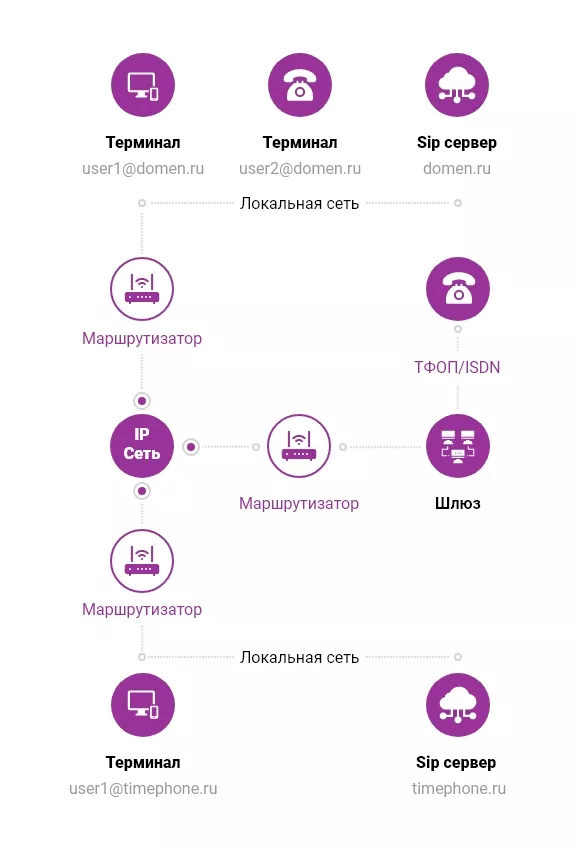

SIP-телефония работает везде, где есть интернет скоростью от 64 Кбит/сек. Ее используют в бизнесе для налаживания связи по сети. Программы, которые устанавливаются при подключении этой технологии, дают возможность пользователям совершать аудио-, видеозвонки, вести журналы звонков, общаться в чатах между компьютерами внутри сети компании.
У решения есть весомые преимущества:
Технологию интернет-телефонии по протоколу SIP широко используют крупные компании, call-центры, стартапы, небольшие ИП, журналисты, курьеры. Осваивают ее и внедряют в процесс обучения (пока заочных отделений) некоторые учебные заведения. Подключают услугу и организаторы сетевых игр, так как SIP-протокол дает возможность обмениваться голосовыми и видеосообщениями через интернет в режиме реального времени без потери качества звука, картинки.
В наши дни в связи с индивидуальным графиком работы сотрудников и отделов многие компании настраивают переадресацию звонков.
К примеру, если специалист находится вне офиса, звонок автоматически переводится на его мобильник, домашний телефон (его или коллеги). Если звонок поступает в нерабочее время, система голосом сообщает звонящему о том, что компания в данный момент не работает, предлагая перезвонить, и тд. Вообще ситуаций может быть великое множество - все это позволяет обрабатывать каждое обращение от клиента.
|
С помощью интеграции с CRM вы сможете автоматизировать процесс продаж, осуществлять перевод звонков на коллег и т.д. Кроме того, вы сможете:
|